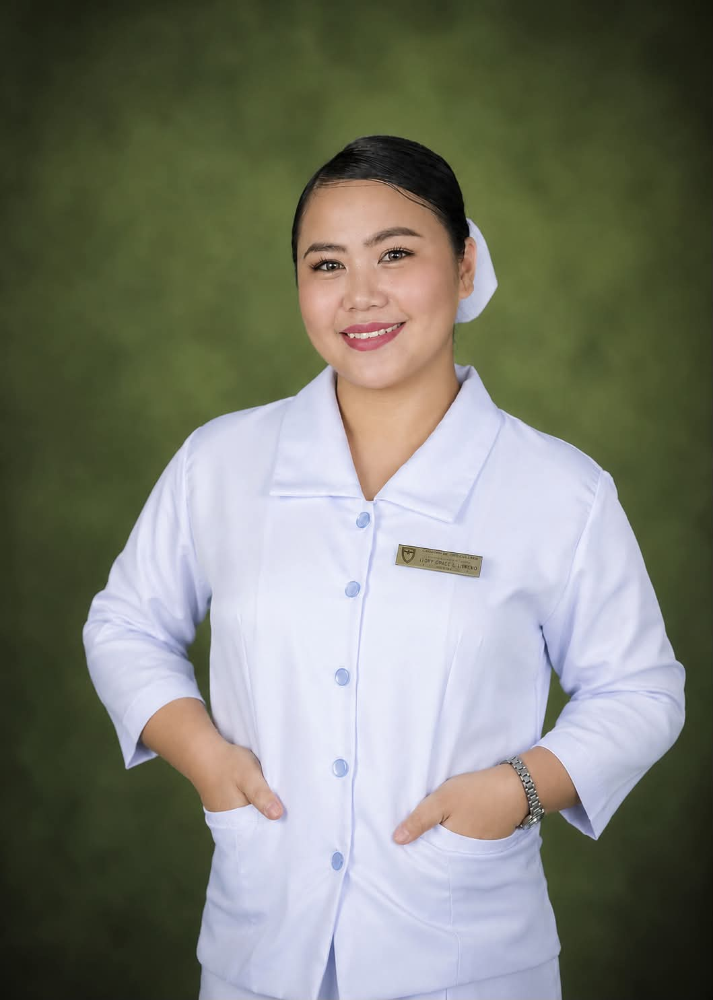
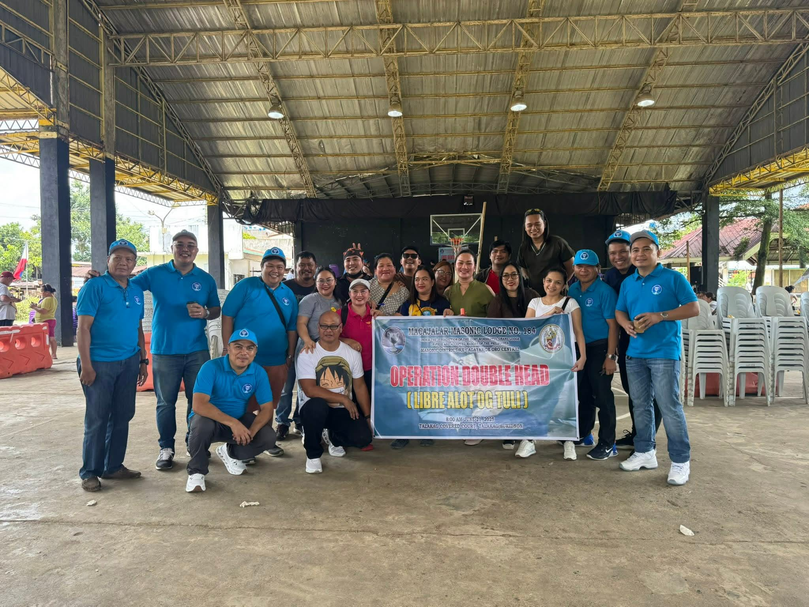
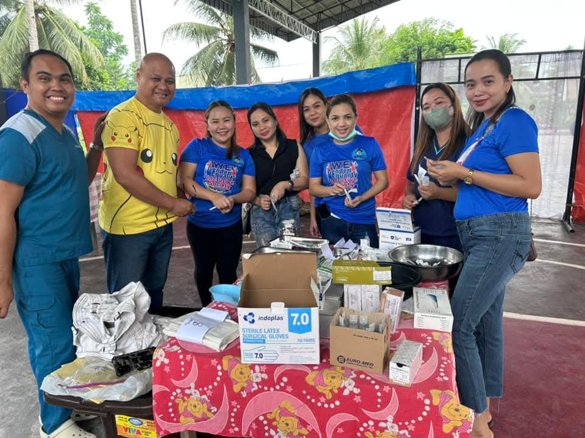
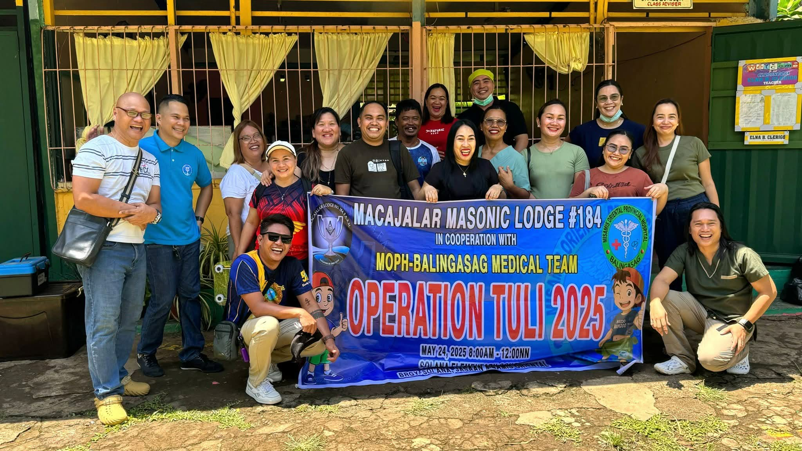
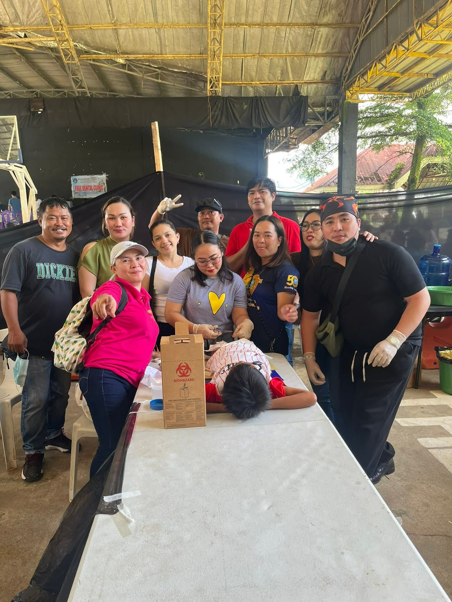

Dedicated Registered Midwife with more than eight years of experience providing prenatal, labor, delivery, postpartum, emergency, pediatric, and medical-surgical care. Passionate about patient education, teamwork, and continuous professional growth while currently pursuing a Bachelor of Science in Nursing.

Dedicated and compassionate, with a track record of accurate assessments and evidence-based interventions across fast-paced clinical settings. Comfortable managing high-acuity situations, mentoring junior staff, and collaborating closely with OB/GYNs and pediatricians to keep escalation of care safe and timely. Presently expanding that foundation through a Bachelor of Science in Nursing, with the aim of bringing both midwifery expertise and nursing leadership to future roles.
Volunteer work alongside the Macajalar Masonic Lodge No. 184 and the Misamis Oriental Provincial Hospital–Balingasag medical team, bringing free circumcision and outreach clinics to barangays across Misamis Oriental and Bukidnon.



